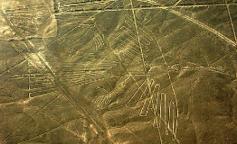
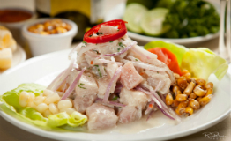
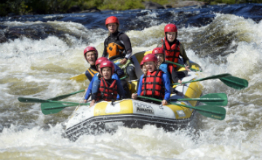

{kind=link}
Breve resumen acerca de Peru
Peru
Perú es un programa de turismo y aventura con más de 15 años en el aire. Manolo del Castillo, su intrépido conductor, recorre cada una de las regiones para mostrar de manera entretenida y amena la variedad de recursos turísticos que tiene nuestro país. Para ello, explora nuevas rutas y hace de cada capítulo una aventura que invita al televidente a ser parte de cada viaje.
Lugares
Impresionantes ruinas Incas, poblados altiplánicos, ciudades coloniales y un sinnúmero de espectaculares escenarios naturales conforman los destinos propuestos en esta recopilación de los mejores lugares turísticos de Perú.
Comida
Las artes culinarias peruanas están en constante evolución y ésta, sumada a la variedad de platos tradicionales, hace imposible establecer una lista completa de sus platos representativos. Cabe mencionar que a lo largo de la costa peruana existen más de dos mil quinientos diferentes tipos registrados de sopas, asimismo existen más de 250 postres tradicionales.
Diversion
El canotaje es uno de los deportes extremos que suelen practicar muchos turistas en distintos lugares del Perú. En el país existen muchos ríos ideales para la práctica de este deporte acuático, así que aquí te brindamos 5 considerados entre los mejores.